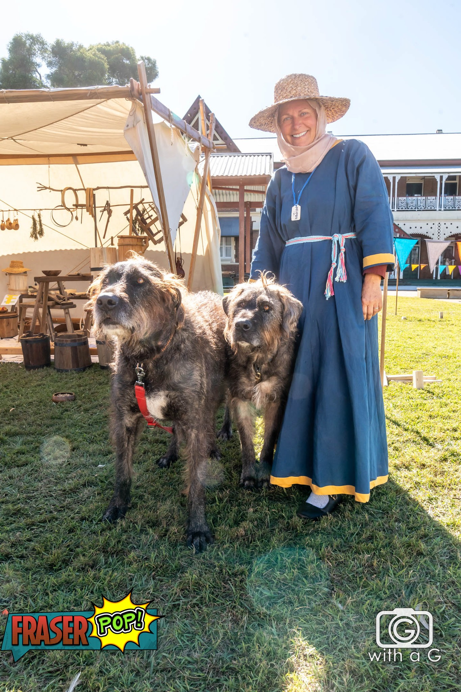

Dagmar Davidsdottir
Craftswoman of Birka

Basic Information
Full Name: Dagmar Davidsdottir
Period: 9th Century
Origin: Birka, Sweden
Current Status: Craftswoman, Wife of Traeloch the Dark
Skills: Weaving, Sewing, Cooking, Animal Husbandry
Timeline
Early Life
Born and raised in Birka, Sweden, learning traditional crafts and household skills from her mother and other women of the community.
Marriage to Traeloch
Married to Traeloch the Dark, a skilled hunter and warrior, forming a partnership that combines their respective skills and knowledge.
Current Life
Active member of Riverbend Medieval Society, focusing on creating authentic Viking-era crafts and camping equipment for reenactment events.
Detailed Narrative
Dagmar Davidsdottir is a skilled craftswoman whose life is deeply rooted in the traditions of 9th century Birka, Sweden. As a daughter of David, she carries the patronymic name that reflects her heritage and family lineage. Her expertise in traditional crafts makes her an invaluable member of the Riverbend Medieval Society, where she brings the authentic practices of Viking-era Scandinavia to life.
Her primary skills include weaving, sewing clothing, cooking, and tending to animals - all essential aspects of daily life in Viking-age Scandinavia. These skills were passed down through generations of women in her family, and she takes great pride in maintaining these traditions with historical accuracy.
Dagmar is married to Traeloch the Dark, a skilled hunter and warrior. Their partnership represents the complementary roles often found in Viking society, where men and women each contributed their unique skills to the household and community. While Traeloch focuses on hunting and protection, Dagmar maintains the domestic crafts and skills that keep their household running smoothly.
One of Dagmar's current passions is the creation of authentic Viking-era tents and camping equipment. This project is particularly important as it will enable the Riverbend Medieval Society to participate in Viking-inspired reenactment events with historically accurate gear. Her knowledge of traditional materials and techniques ensures that these items are not only functional but also true to the period they represent.
As a member of the Riverbend Medieval Society, Dagmar is committed to sharing her knowledge and skills with others. She often participates in demonstrations of traditional crafts, teaching others about the importance of these skills in Viking society and how they were practiced in Birka during the 9th century.
Her dedication to historical accuracy and traditional crafts makes her an invaluable resource for the society, particularly in their efforts to create authentic Viking-era experiences. Through her work, she helps bridge the gap between modern reenactment and historical reality, ensuring that the traditions of Birka are preserved and shared with future generations.